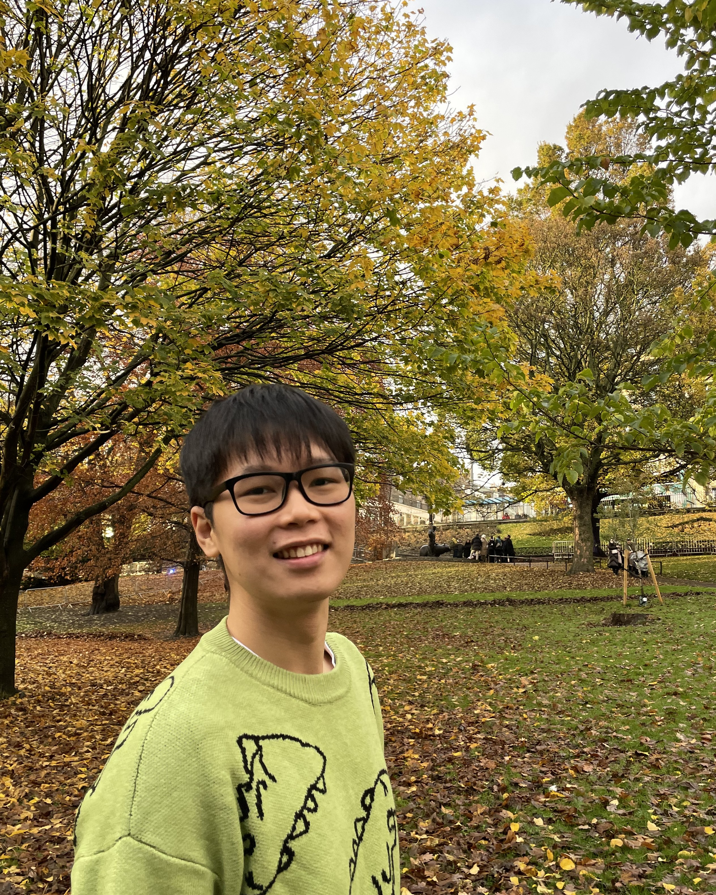
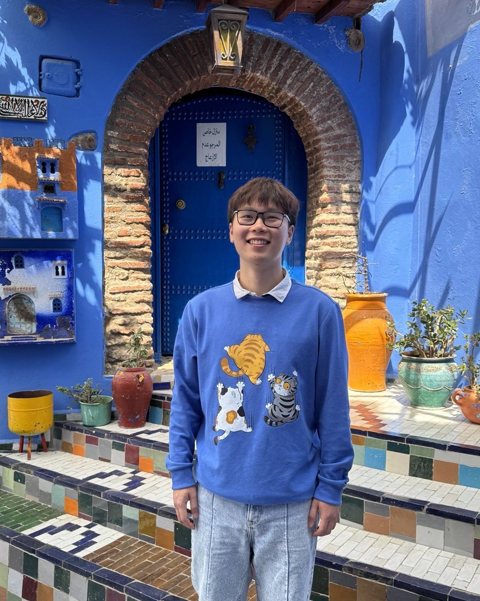

I am a postdoc at the Shenzhen International Center for Mathematics at the Southern University of Science and Technology, where I work with Prof. Olivier Mathieu and Prof. Efim Zelmanov.
My interests lie in the intersection of noncommutative ring theory, Lie theory and representation theory. I am very interested in the link between primitive ideals of noncommutative algebras and Poisson primitive ideals of their semi-classical limits. I am also interested in the representation theory of the Virasoro algebra and other Virasoro-like algebras coming from mathematical physics.
I recently completed my PhD at the University of Edinburgh, supervised by Prof. Susan Sierra, where I was a member of the Structure and Symmetry group at the Hodge Institute.
Other activities
- Co-organizer of the GEARS Seminar (2024–2025) and of the Hodge Club seminar (2023–2024).